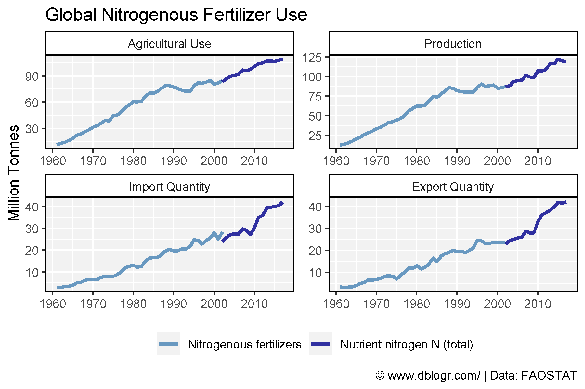
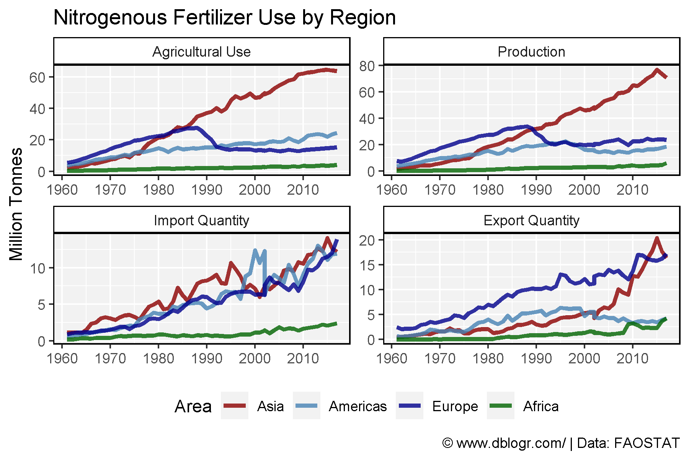
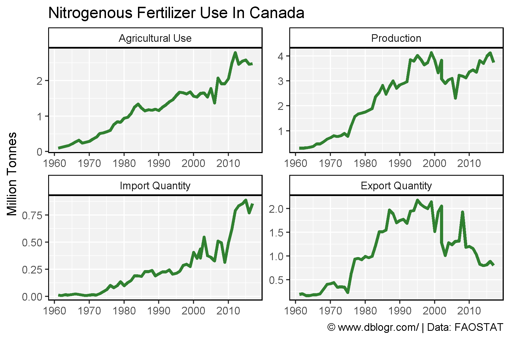
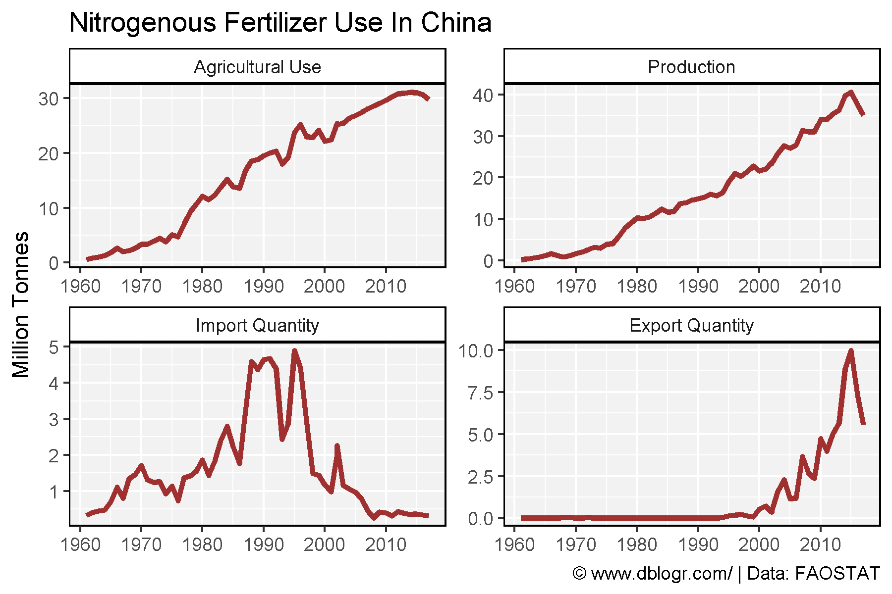
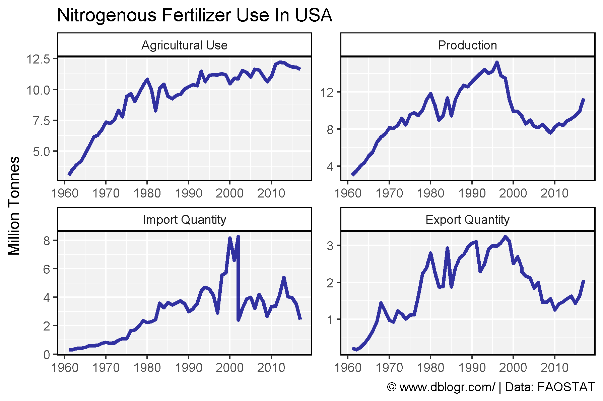
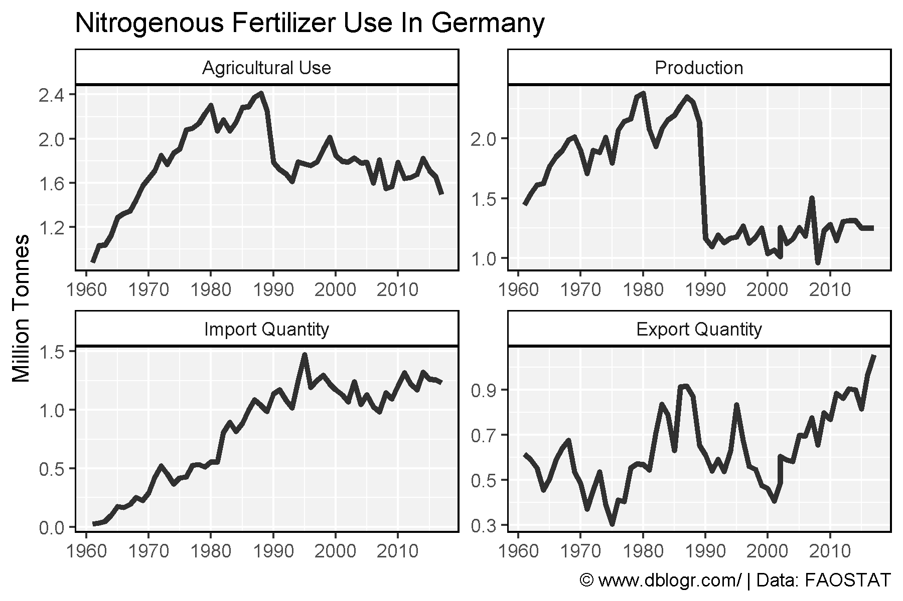
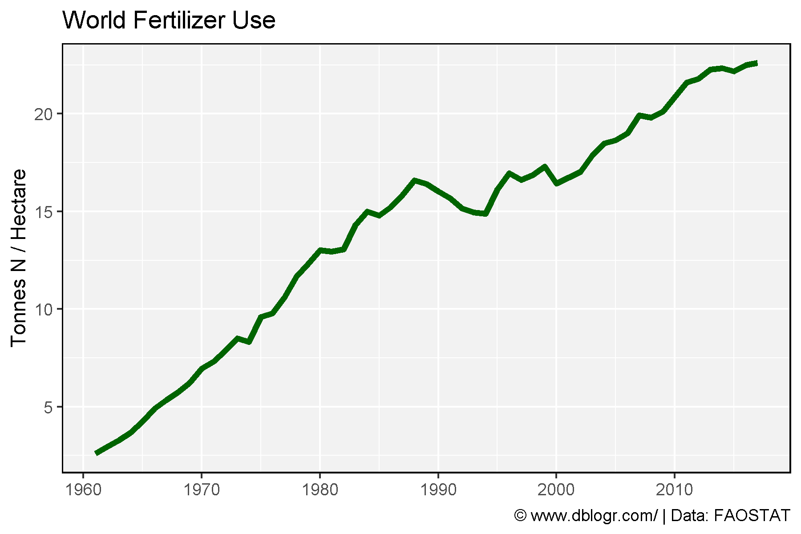
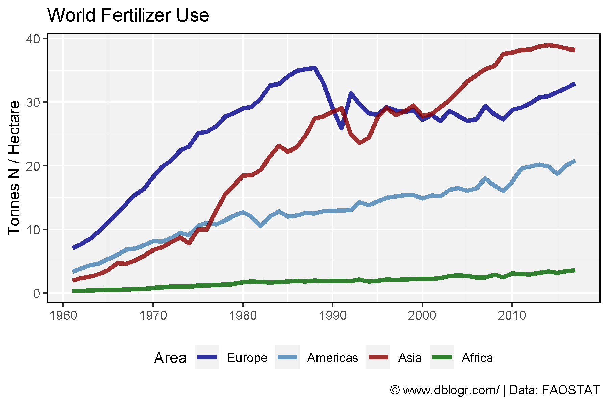
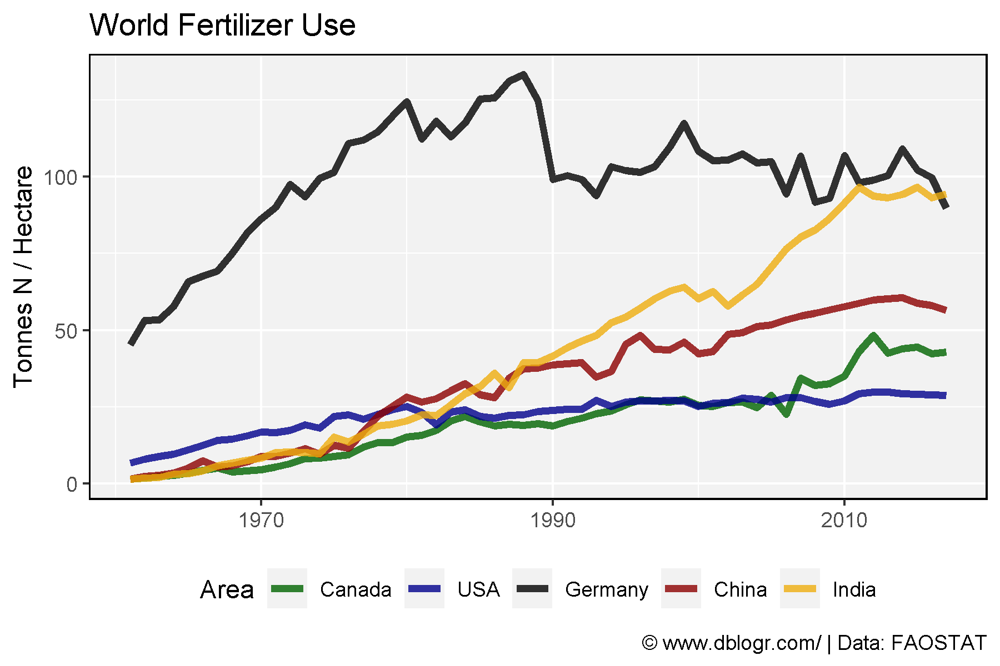
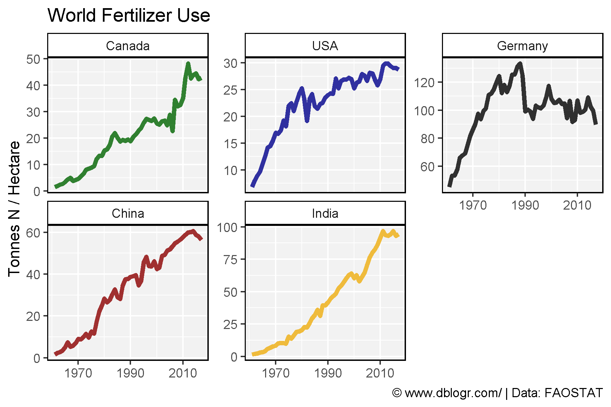

# devtools::install_github("derekmichaelwright/agData")
library(agData) # Loads: tidyverse, ggpubr, ggbeeswarm, ggrepel# Prep data
mm <- c("Agricultural Use", "Production", "Import Quantity", "Export Quantity")
xx <- agData_FAO_Fertilizers %>%
filter(Area == "World", Measurement %in% mm,
Item %in% c("Nitrogenous fertilizers", "Nutrient nitrogen N (total)")) %>%
mutate(Measurement = factor(Measurement, levels = mm))
# Plot
mp <- ggplot(xx, aes(x = Year, y = Value / 1000000)) +
geom_line(aes(color = Item), size = 1.25, alpha = 0.8) +
facet_wrap(Measurement~., scales = "free") +
scale_x_continuous(breaks = seq(1960, 2020, by = 10)) +
scale_color_manual(name = NULL, values = c("steelblue", "darkblue")) +
theme_agData(legend.position = "bottom") +
labs(title = "Global Nitrogenous Fertilizer Use",
caption = "\xa9 www.dblogr.com/ | Data: FAOSTAT",
y = "Million Tonnes", x = NULL)
ggsave("fertilizers_01.png", mp, width = 6, height = 4)
# Prep data
mm <- c("Agricultural Use", "Production", "Import Quantity", "Export Quantity")
areas <- c("Asia", "Americas", "Europe", "Africa")
colors <- c("darkred", "steelblue", "darkblue", "darkgreen")
xx <- agData_FAO_Fertilizers %>%
filter(Area %in% areas, Measurement != "Other Uses",
Item %in% c("Nitrogenous fertilizers", "Nutrient nitrogen N (total)")) %>%
mutate(Measurement = factor(Measurement, levels = mm),
Area = factor(Area, levels = areas))
# Plot
mp <- ggplot(xx, aes(x = Year, y = Value / 1000000, color = Area)) +
geom_line(size = 1.25, alpha = 0.8) +
facet_wrap(Measurement~., scales = "free") +
theme_agData(legend.position = "bottom") +
scale_x_continuous(breaks = seq(1960, 2020, by = 10)) +
scale_color_manual(values = colors) +
labs(title = "Nitrogenous Fertilizer Use by Region",
caption = "\xa9 www.dblogr.com/ | Data: FAOSTAT",
y = "Million Tonnes", x = NULL)
ggsave("fertilizers_02.png", mp, width = 6, height = 4)
# Create plotting function
ggFertN <- function(area, color = "darkred") {
# Prep data
mm <- c("Agricultural Use", "Production", "Import Quantity", "Export Quantity")
xx <- agData_FAO_Fertilizers %>%
filter(Area == area, Measurement != "Other Uses",
Item %in% c("Nitrogenous fertilizers", "Nutrient nitrogen N (total)")) %>%
mutate(Measurement = factor(Measurement, levels = mm))
# Plot
ggplot(xx, aes(x = Year, y = Value / 1000000)) +
geom_line(size = 1.25, alpha = 0.8, color = color) +
scale_x_continuous(breaks = seq(1960, 2020, by = 10)) +
facet_wrap(Measurement ~ ., scales = "free") +
theme_agData() +
labs(title = paste("Nitrogenous Fertilizer Use In", area),
caption = "\xa9 www.dblogr.com/ | Data: FAOSTAT",
y = "Million Tonnes", x = NULL)
}# Plot
mp <- ggFertN("Canada", "darkgreen")
ggsave("fertilizers_03.png", mp, width = 6, height = 4)
# Plot
mp <- ggFertN("China", "darkred")
ggsave("fertilizers_04.png", mp, width = 6, height = 4)
# Plot
mp <- ggFertN("USA", "darkblue")
ggsave("fertilizers_05.png", mp, width = 6, height = 4)
# Plot
mp <- ggFertN("Germany", "black")
ggsave("fertilizers_06.png", mp, width = 6, height = 4)
# Prep data
y1 <- agData_FAO_Fertilizers %>%
filter(Measurement == "Agricultural Use",
Item == "Nitrogenous fertilizers", Year < 2002 )
y2 <- agData_FAO_Fertilizers %>%
filter(Measurement == "Agricultural Use",
Item == "Nutrient nitrogen N (total)") %>%
mutate(Item = "Nitrogenous fertilizers")
y3 <- agData_FAO_LandUse %>%
filter(Item == "Agricultural land")
yy <- bind_rows(y1, y2, y3) %>%
select(-Measurement, -Unit) %>%
spread(Item, Value) %>%
mutate(NPH = `Nitrogenous fertilizers` / `Agricultural land`)# Prep data
xx <- yy %>% filter(Area == "World")
# Plot
mp <- ggplot(xx, aes(x = Year, y = NPH)) +
geom_line(size = 1.5, color = "darkgreen") +
scale_x_continuous(breaks = seq(1960, 2020, by = 10)) +
theme_agData() +
labs(title = "World Fertilizer Use", y = "Tonnes N / Hectare", x = NULL,
caption = "\xa9 www.dblogr.com/ | Data: FAOSTAT")
ggsave("fertilizers_07.png", mp, width = 6, height = 4)
# Prep data
areas <- c("Europe", "Americas", "Asia", "Africa")
colors <- c("darkblue", "steelblue", "darkred", "darkgreen")
xx <- yy %>% filter(Area %in% areas) %>%
mutate(Area = factor(Area, levels = areas))
# Plot
mp <- ggplot(xx, aes(x = Year, y = NPH, color = Area)) +
geom_line(size = 1.5, alpha = 0.8) +
scale_color_manual(values = colors) +
scale_x_continuous(breaks = seq(1960, 2020, by = 10)) +
theme_agData(legend.position = "bottom") +
labs(title = "World Fertilizer Use", y = "Tonnes N / Hectare", x = NULL,
caption = "\xa9 www.dblogr.com/ | Data: FAOSTAT")
ggsave("fertilizers_08.png", mp, width = 6, height = 4)
# Prep data
colors <- c("darkgreen", "darkblue", "black", "darkred", "darkgoldenrod2")
areas <- c("Canada", "USA", "Germany", "China", "India")
xx <- yy %>% filter(Area %in% areas) %>%
mutate(Area = factor(Area, levels = areas))
# Plot
mp <- ggplot(xx, aes(x = Year, y = NPH, color = Area)) +
geom_line(size = 1.5, alpha = 0.8) +
scale_color_manual(values = colors) +
scale_x_continuous(breaks = seq(1970, 2010, by = 20)) +
theme_agData(legend.position = "bottom") +
labs(title = "World Fertilizer Use", y = "Tonnes N / Hectare", x = NULL,
caption = "\xa9 www.dblogr.com/ | Data: FAOSTAT")
ggsave("fertilizers_09.png", mp, width = 6, height = 4)
# Plot
mp <- mp + facet_wrap(Area ~., ncol = 3, scales = "free_y") +
theme(legend.position = "none")
ggsave("fertilizers_10.png", mp, width = 6, height = 4)
© Derek Michael Wright www.dblogr.com/